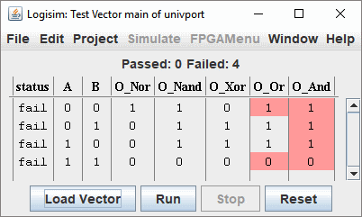

测试向量窗口
测试向量窗口类似于日志窗口的表格选项卡。您可以从文件加载测试向量，Logisim 将开始对当前电路运行测试。与日志窗口一样，项目中只有一个测试向量窗口，表格将更改以反映项目窗口中正在模拟的电路。但请注意，测试向量模块运行电路模拟器的独立副本，因此不会干扰项目窗口中的模拟，也不会受其影响。
在示例中，我们将测试下面的电路。该电路从两个输入给出五个逻辑函数的结果。它包含一个错误，因为底部的 NAND 门应该是 AND 门。

测试向量文件如下所示：
A B O_Nor O_Nand O_Xor O_Or O_And O_AB[2] 0 0 1 1 0 0 0 00 0 1 0 1 1 1 0 01 1 0 0 1 1 1 0 10 1 1 0 0 0 1 1 11
要运行测试，请选择菜单 | 模拟 |→| 测试向量 |，然后使用 加载向量 按钮。选择您构建的向量文件。模拟立即执行，并显示一个包含结果的表格。

任何不正确的输出都将以红色标记。将鼠标悬停在红色框上以查看根据测试向量应该输出的值。包含不正确输出的行将排序到窗口顶部。
文件格式很简单。您可以使用日志模块（在文件输出选项卡中选择"包含标题行"）来开始，因为在大多数情况下，日志模块输出的格式与测试向量模块使用的格式相同。
Interactive Test Execution
Each row in the Test Vector window has two buttons that allow you to manually interact with individual tests:
- "Show" button (first column): This button previews the circuit state without checking outputs.
- Combinational tests (seq=0): Resets the circuit, sets the input values, and propagates signals. Only the clicked row is highlighted in green to show it was executed.
- Sequential tests (seq>0): Resets the circuit, then runs all prior sequential steps in the set (from seq 1 up to the target step), propagating after each step. All executed sequential steps are highlighted in green to show the execution path.
- "Set" button (second column): This button sets input values and may execute tests.
- Combinational tests (seq=0): Resets the circuit, applies the test inputs, then propagates signals. Only the clicked row is highlighted in green to indicate it was executed.
- Sequential tests (seq>0): Does NOT reset the circuit and does NOT run any other tests. Simply sets the input values for that single step only, then propagates signals. Only the clicked row is highlighted in green. This allows you to manually step through a sequence by setting individual step values without resetting or running previous steps.
- For either button, if you turn off Auto-Propagation in the Simulation menu, it will not propagate the last step in the sequence (or the only step in the combinational test), stopping after setting the input pins. This allows you to single-step the circuit through the propagation of that line.
Highlighting behavior:
- When the Show button is clicked on a combinational test, only that single row is highlighted in green.
- When the Show button is clicked on a sequential test, all sequential steps (seq > 0) up to and including the target step are highlighted in green.
- When the Set button is clicked, only the clicked row is highlighted in green, regardless of whether it's combinational or sequential.
- Highlighting is cleared when a new vector file is loaded or when the circuit simulator is reset.